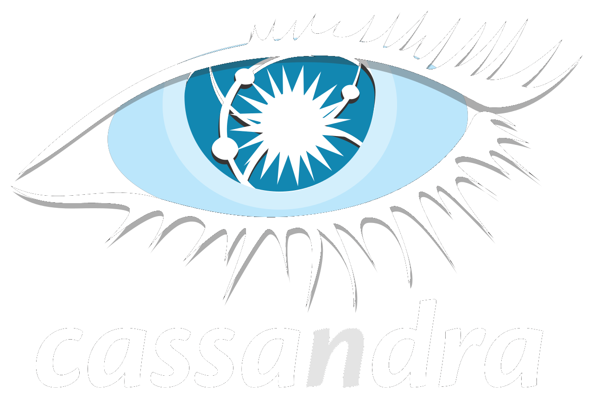

ReST Server For Apache Cassandra
Real-Time Card Fraud Analysis and Prevention RTFAP2 on GitHub.
RTFAP2 is a Real-Time Fraud Analysis and Prevention demonstration platform created using Kafka, Spark and Cassandra
Use Case: A large bank wants to monitor its customers creditcard transactions to detect and deter fraud attempts.
They want the ability to search and group transactions by credit card, period, merchant, credit card provider, amounts, status etc.
The client wants a REST API to:
- Identify all transactions tagged as fraudulent in the last minute/day/month/year
- Identify all transactions tagged as fraudulent for a specific card
- Report all transactions for a merchant on a specific day
- Report roll-up of all transactions by card and year
- Search the entire transaction database by merchant, cc_no, amounts
- Provide the ratio of transaction success based on the first 6 digits of their credit card no.
- Provide the ratio of confirmed transactions against fraudulent transactions in the last minute
- Provide a moving ratio of approved transactions per minute, per hour
- Provide a count of approved transactions per minute, per hour
The sample queries are served by a web service written in Node.js.
- A ReSTful web interface provides an API for calling programs to query the data in Cassandra.
- The code for this is in the restRTFAP directory provided in the repo. You will use a web browser interface to run the queries.
- Use the example url’s supplied - these will return a json representation of the data using the ReST service.
The ReST Server set up details are described here on Github
CQL Queries with Cassandra

Simple ReST queries with CQL, the Cassandra Query Language
We can run CQL queries to look up all transactions for a given credit card (cc_no).
The Transactions table is primarily write-oriented - it's the destination table for the streamed transactions and used for searches.
We don't update the transactions in the Transactions table once they have been written.
To run a simple query to return all transactions click http://localhost:3000/transactions
Tip: hover over the link to vire the CQL query that will be run
CQL & Solr QUeries
Solr brings Enterprise Search on Cassandra data
DataStax Enterprise provides a built-in enterprise search capability on data, stored in Cassandra, that scales and performs in a way that meets the search requirements of modern Internet Enterprise applications.
Using this search functionality allows the volume of transactions to grow without a reduction in performance or throughput. DSE Search also supports live indexing for improved index throughput and reduced reader latency.
The Transactions table has a primary key and clustering columns, so a typical query would look like this:
> SELECT * FROM rtfap.transactions WHERE cc_no='1234123412341234' and year=2016 and month=3 and day=9;
But that doesn't provide a very flexible search capability. For this we need an Enterprise Search capability like Solr. We create Solr "cores" (indexes) on the data in Cassandra.
Then we aren't restricted by the limitations of the Cassandra table index structure :)
Examine how CQL and Solr are used together in the following queries that use Solr indexing on Cassandra tables:
- Identify transactions over a certain amount
> SELECT * FROM rtfap.transactions where solr_query = \'\{"q":"*:*", "fq":"amount:[' + amount + ' TO *]"\}\';
- Retrieve all transactions in the TRANSACTIONS table where status="Rejected"
> SELECT * FROM rtfap.transactions WHERE solr_query=\'\{"q":"status: Rejected"\}\';
- Retrieve all transactions in the TRANSACTIONS table, faceted by merchant
> SELECT * FROM rtfap.transactions WHERE solr_query=\'\{"q":"*:*", "facet":{"field":"merchant"}\}\';
- Retrieve all transactions in the TRANSACTIONS table, faceted by status, over the last year/month/minute
> SELECT * FROM rtfap.transactions WHERE solr_query = \'\{"q":"*:*", "fq":"txn_time:[NOW-1' + req.query.period + ' TO *]","facet":{"field":"status"}}\';
- Retrieve all transactions in the TRANSACTIONS table, faceted by status, for the specified card number and period
> SELECT * FROM rtfap.transactions where solr_query = \'{"q":"cc_no:' + req.query.card + '*", "fq":"txn_time:[NOW-1' + req.query.period + ' TO *]","facet":{"field":"status"}}\';
- Retrieve all transactions in the TRANSACTIONS table for a specified card number (optional wild card)
> SELECT * FROM rtfap.transactions where solr_query=\'{"q":"cc_no:' + req.query.card + '"}\';
- Retrieve all transactions in the TRANSACTIONS table tagged as "Fraudulent" for a specified card number
> SELECT * FROM rtfap.transactions where solr_query=\'{"q":"cc_no:' + req.query.card + '", "fq":["tags:Fraudulent"]}\';
- Retrieve data for all transactions in the TRANSACTIONS table tagged as "Fraudulent" over the last year
> SELECT * FROM transactions where solr_query = \'{"q":"*:*", "fq":["txn_time:[NOW-1' + req.query.period + ' TO *]", "tags:Fraudulent"]}\';
Spark & Querying Roll Up Tables

Streaming Real-Time Analytics with Spark & Kafka
DSE provides integration with Spark out-of-the box to enable analysis of data in-place on the same cluster where the data is ingested and stored.
Workloads can be isolated and there is no need to ETL the data. The data ingested in a Cassandra-only (OLTP) data center can be automatically replicated to a logical data center of Cassandra nodes also hosting Spark Workers.
This tight integration between Cassandra and Spark offers huge value in terms of significantly reduced ETL complexity (no data movement to different clusters) and thus reducing time to insight from your data through a much less complex "cohesive lambda architecture"
Streaming Analytics
The streaming analytics element of this application is made up of two parts:
A transaction "producer" - a Scala/Akka app that generates random credit card transactions and then places those transactions onto a Kafka queue.
A transaction "consumer" - also written in Scala, is a Spark streaming job that (a) consumes the messages put on the Kafka queue, and then (b) parses those messages, evalutes the transaction status and then writes them to the Datastax/Cassandra table transactions.
It also generates
rolling summary lines into the txn_count_min table every minute.
Streaming analytics code can be found under the directory TransactionHandlers/producer (pre-requisite: make sure you have run the CQL schema create script as described above to create the necessary tables).
Follow the Spark streaming installation and set up instructions here on Github